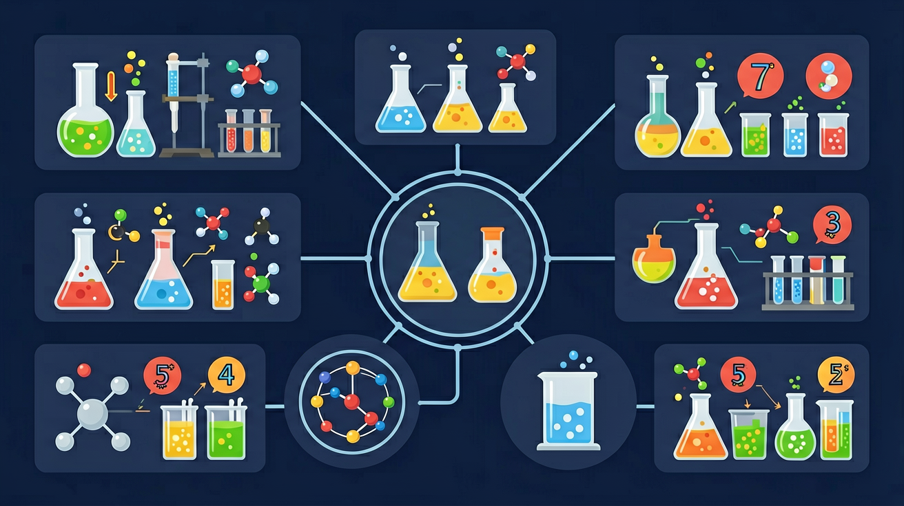

真实情境
冬季取暖器的选择困境
小华家准备更换冬季取暖设备，销售员同时推荐了电暖器和燃气壁挂炉。电暖器标注功率2000W，燃气产品则标注热值35MJ/m³。家人纠结于能耗对比和长期使用成本，需要计算不同能源的实际放热量。
已有经验
学生已掌握能量单位换算（J与kJ）、简单热值计算、家用电器功率概念
真正卡点
混淆反应热（ΔH）正负号含义，忽视热化学方程式中物质状态对能量计算的影响
本课任务
计算比较两种设备的理论放热量，分析热化学方程式中的能量变化
怎样用一个能量图判断反应是放热还是吸热？

先选一个你关心的问题。后面的例子、提示和 AI 学伴都会围绕这个问题来帮你推进。
选择或输入后，本课会围绕你的问题展开。
小华家准备更换冬季取暖设备，销售员同时推荐了电暖器和燃气壁挂炉。电暖器标注功率2000W，燃气产品则标注热值35MJ/m³。家人纠结于能耗对比和长期使用成本，需要计算不同能源的实际放热量。
学生已掌握能量单位换算（J与kJ）、简单热值计算、家用电器功率概念
混淆反应热（ΔH）正负号含义，忽视热化学方程式中物质状态对能量计算的影响
计算比较两种设备的理论放热量，分析热化学方程式中的能量变化
化学反应伴随能量变化，恒压反应热用焓变 ΔH 表示。放热 ΔH<0，吸热 ΔH>0。反应热来自旧键断裂吸能与新键形成放能的净结果：ΔH≈断键能−成键能。热化学方程式需注明状态与 ΔH。
若成键释放的能量大于断键吸收的能量，反应？
燃烧热指 1 mol 可燃物完全燃烧生成稳定氧化物放出的热量；中和热指强酸强碱稀溶液生成 1 mol 水放出的热量。定义都规定了“1 mol”的对象与条件，比较数据前先看是否同一基准。测量中和热要注意保温与浓度稀释。
燃烧热的定义基准是？
焓是状态函数，ΔH 与路径无关，可用盖斯定律由已知反应组合求未知反应热。方程式加减对应 ΔH 加减，逆写变号、乘系数同乘。计算时先规划抵消中间物，再合并 ΔH。
盖斯定律的依据是焓为？
本课任务：用能量形式转化理解放热吸热的体系—环境能量流动，再用盖斯定律做一道组合求 ΔH 的练习。
写清自变量、因变量和至少两个保持不变的条件，避免同时改变多个因素后无法归因。
至少记录三组带单位的数据或三个可复查的现象，不用“变大了”“更明显”代替证据。
用本课公式、粒子模型或受力关系解释趋势，并指出结论成立所依赖的模型条件。
换一个参数或真实情境预测结果，再用仿真检验；若不一致，回查变量、单位和边界条件。
化学反应伴随能量变化，断键吸热、成键放热。反应热可用热化学方程式表示，需注明物质状态与 ΔH。放热反应 ΔH＜0，吸热反应 ΔH＞0。燃料燃烧热、中和热是常见类型。
注明状态（s、l、g、aq），ΔH 与化学计量数对应，单位通常 kJ·mol⁻¹。比较热量时注意物质的量。用键能估算：ΔH≈反应物键能总和−生成物键能总和。
常见误区：常见误区是不写状态或把 ΔH 符号写反，以及忽略计量数与热量的对应关系。
放热反应的 ΔH？
记忆锚点：能量图判断：生成物低，放热负；生成物高，吸热正。
易错提醒：常见错误：把“吸热”理解成反应不能自发，或忘记 ΔH 的正负号。吸热/放热描述能量变化，不等同于反应能否发生。
理解化学反应中的能量变化规律，掌握热化学方程式的书写规范，能通过键能变化解释反应热产生原因
镁条燃烧实验：2.4g镁条在氧气中完全燃烧释放119.9kJ热量，测得ΔH=-601.8kJ/mol，火焰发出耀眼白光并生成白色氧化镁粉末
分析反应热步骤：1.写出配平方程式 2.标注各物质状态 3.计算键能差 4.确定ΔH符号与数值
易忽略物质状态标注，如将H₂O(l)误写为H₂O(g)导致ΔH值偏差44kJ/mol
课堂任务：请用“现象/文本/地图/实验数据 → 关键证据 → 学科解释 → 迁移应用”四步，重写一个关于「热化学：化学反应里的能量账本」的新问题。
不要只看结论。动手改变变量后，再用一句话解释画面为什么变了。
识别并写出本节核心定义、公式或分类标准。
把本课标准用于一个实验数据或真实生活场景。
设计一个反例，说明常见错误为什么站不住脚。
如果你能解释“怎样用一个能量图判断反应是放热还是吸热？”，这节课就真正过关了。
自发过程由熵（S，体系混乱度）和焓共同决定。吉布斯自由能ΔG=ΔH-TΔS，当ΔG<0时反应自发。例如：①冰融化ΔH>0但ΔS>0，高温时ΔG<0（自发）；②氨合成ΔH<0且ΔS<0，低温才自发。生活中，樟脑丸升华（ΔH>0，ΔS>0）在室温即可发生，而水结冰（ΔH<0，ΔS<0）需低温驱动。工业生产需综合考量：哈伯法合成氨在400-500℃进行，既保证反应速率又兼顾转化率（低温有利平衡但速率过慢）。理解这些原理可优化反应条件，如控制碳酸钙分解温度（ΔH>0，ΔS>0）来制备生石灰。